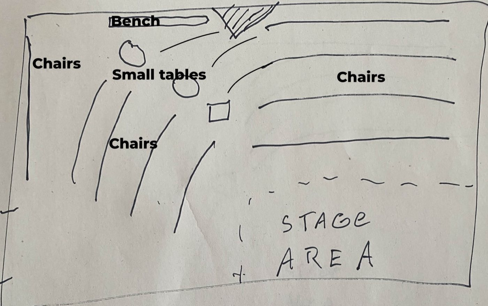
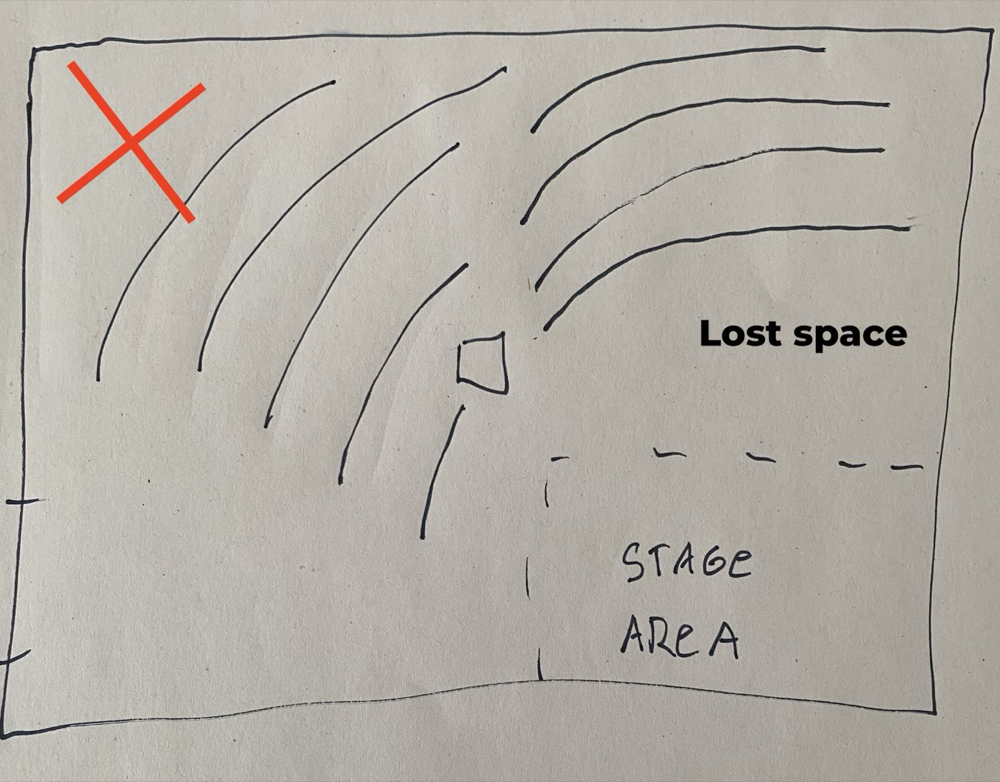
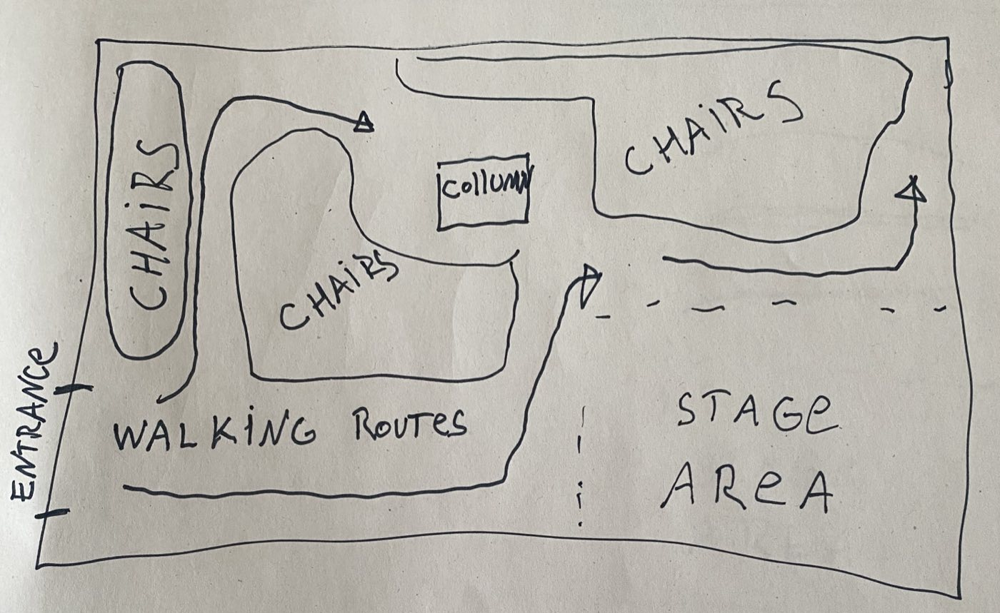

Night shift guide
KM28 Concert Manager
Everything to do on a show night, from opening up to locking down.
Opening housekeeping
- Turn on the lights: green room, hall, bathroom
- Wipe the toilets and sink
- Restock paper towels in the bathroom, and toilet paper
- Take out the trash from the bar, green room, bathroom and bathroom stalls
- Take the empties to the basement and throw out wine bottles. Non-KM28 bottles: throw away or put on the sidewalk
- Sweep the stage and bar area
Do not throw paper towels in the toilet.
Performer & speakers
The stage front is inclined at 45°, not facing straight.
- Angle the speakers to match the 45° stage front
Lights
Make sure the performers are on stage and check the light from all angles.
Stage lights (warm white)
Each reflector has three handles:
- X axis — left / right
- Y axis — up / down
- Focus radius — bigger or smaller spot
The pair of reflectors should light the performers' faces without hard shadows, each one at about 45° from the face.
- Solo performer: use the smallest focus radius
- Bigger groups: distribute the light sources equally
Accent color LED
The color LED only has the X and Y axis.
- Solo performer: point it at the ceiling for a decorative effect
- Larger groups: point it at the performers, adding to an even light together with the warm white stage lights
Chairs
- Front chairs go close and parallel to the stage

- Don't make a uniform half moon — it loses seats

- Keep a walking route to the back of the side audience

Sound check
- Soundcheck with the Soundcraft tablet
Recording
- Check recording levels of the stereo mic pair and the stereo line-in (on the device at the bar)
Artist's merch
Notes for merch placement are still to be added.
Bar
Which glass for which drink:
- WineSmall cup — fill to halfway between the upper line and the top
- Hard liquorWhisky glass — fill to the 40 ml line (actually 45 ml = 1.5 oz)
- Chouffe, Duvel, Chimay, BlancheBig glass
- GueuzeSmall glass
- Everything elseIn the bottle
Drinks policy
To be added.
During the show
Just before the show starts
- Door person: to be added
- Start recording
- Switch off the room lights
- Turn off all bar lights, the merch lamp and the floor lamps
- Announce the artist — before they are on stage
Just after the first set ends
- Stop recording the set
- Performer announces the break
- Fade in the bar lights
- Switch on the room lights
- Dim the stage lights
DJing
To be added.
Just before the second set starts
- Begin recording the set
- Switch off the room lights
- Fade out the bar lights
- Bring up the stage light level
- Give out the musicians' money
After the last set ends
- Stop recording the set
- Fade in the bar lights
- Put on music
- Dim the stage lights
Pay the musicians
- Once the bar movement calms down, pay out the musicians
Check out
- Fill out the necessary forms
- Turn the turntable sound system off
- Put the empty bottles away in the corridor
- Clean the toilets